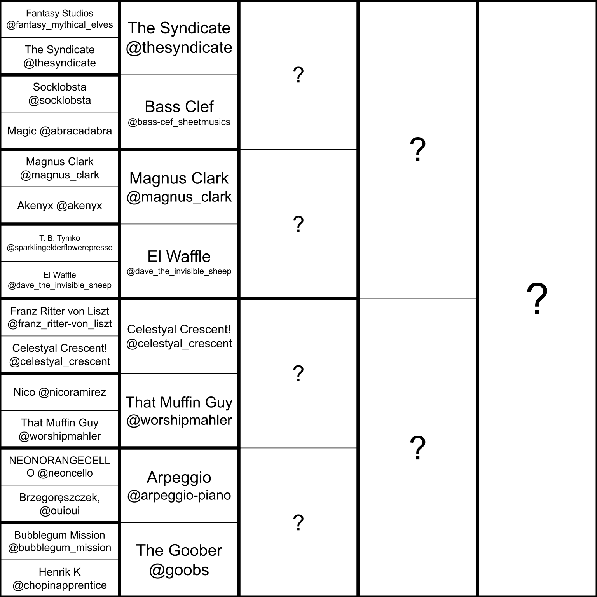

This is Kozhavfexajq's first Piano Competition.
A composition competition of piano.
If you would like to join, comment that you want to on the score, and you will be added to the list of substitute participants if someone has to drop out.
Current list: Foxygamer2110
UltimateGE

To submit your score, you must add the tag "KPC" and share it with me (with writing or admin permissions).
Scores must be submitted by Saturday March 21st at 23:59 UTC/GMT
Theme: Étude (Study)
For this round, you will be writing a piano étude.
If you've never done this before, here are some guidelines:
Start with a gimmick. Études are meant to build technique, but also sound good.
The gimmick you choose can be anything from arpeggios, to a certain rhythm, to phrasing and musicality.
Build off of the gimmick you chose, make variations of it, add a melody, make it sound good.
If you are still feeling unsure, some good examples are at the bottom of the page.
Rules:
Scoring Criteria:
Happy composing!
Example Études: